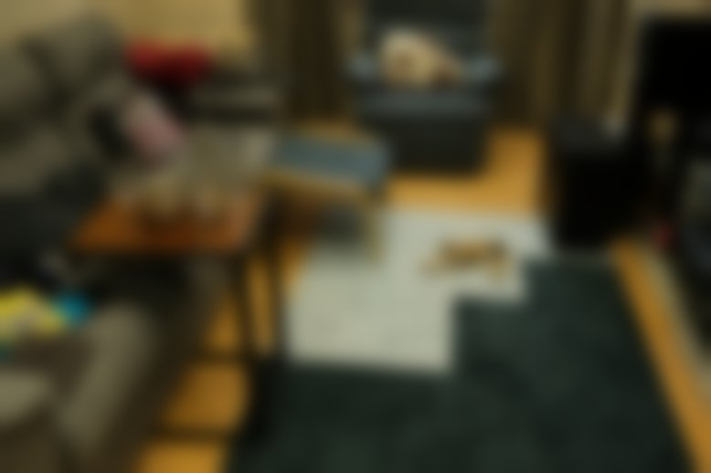
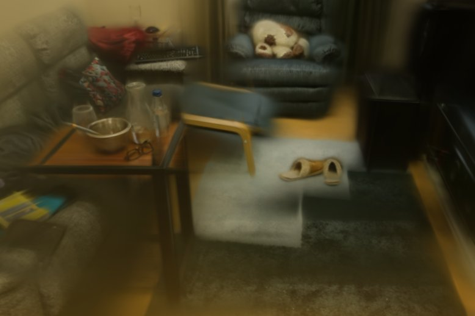

Photometric visual servoing (PVS) achieves sub-millimeter positioning accuracy by directly minimizing the pixel-wise difference between current and desired images. However, the highly nonlinear cost function limits its convergence domain, restricting practical applicability to small displacements.
We propose scale-adaptive PVS using 3D Gaussian Splatting (3DGS) as the scene representation. By inflating the 3D Gaussian covariances by a factor α, the rendered images are smoothed in a geometry-aware manner — respecting depth ordering, anisotropy, and occlusions. This widens the convergence basin while preserving the analytical interaction matrix of standard PVS.
Unlike prior smoothing approaches (PGM-VS operates in 2D image space, DDVS uses optical defocus), our method smooths directly in the 3D scene representation. Experiments on multiple indoor and outdoor scenes demonstrate that scale inflation with α ∈ [1.8, 2.2] doubles the convergence rate compared to standard PVS, with negligible loss of final positioning accuracy.
At first glance, blurring an image seems counterproductive for precise robot positioning — shouldn't sharper measurements lead to better navigation? The answer lies in the shape of the cost function that the visual servoing optimizer must descend.
With sharp images, the photometric cost function is highly non-convex: small camera displacements cause large pixel-level changes due to texture shifts, specular reflections, and occlusions. This creates numerous local minima that trap the optimizer. The gradient may point in the wrong direction when the camera is far from its goal — the controller gets "lost."
Smoothing the image removes the high-frequency content responsible for these local minima. The cost landscape transforms from a rugged terrain with many valleys into a smooth bowl with a single global minimum. The optimizer now receives a correct descent direction from much farther away — the convergence basin widens.
The trade-off is clear: too little smoothing leaves local minima, too much smoothing flattens the gradient entirely. Our experiments show that an optimal range exists (α ∈ [1.8, 2.2] for indoor scenes) that maximizes the convergence basin while preserving enough gradient strength for precise final positioning.
Original
No smoothing
Image-space
[Crombez 2019]

λg = 10
Sensor-based
[Caron 2021]
f/16 (simulated defocus)
3D model-based
(Ours)

α = 2.0
Inflating Gaussian scales transforms the photometric cost function from a narrow, non-convex landscape (with local minima) into a smooth convex bowl.

Camera trajectory overlaid on the reconstructed 3DGS scene during visual servoing convergence.
Original PVS (α=1.0)
Inflated (α=2.0)
Green frustum: initial pose. Red frustum: desired pose. Trajectory trail shows camera path.
All four methods animated simultaneously in the reconstructed 3DGS scene. Use mouse to orbit, scroll to zoom.
■ Original ■ PGM-VS ■ DDVS ■ Inflated □ Initial / Desired
Each method shows its camera frustum with live rendered image and trajectory trail. Powered by viser.
Full convergence dashboards showing error curves, velocities, and image evolution for each method.
@article{alj2026scaling,
title={Scale-Adaptive Photometric Visual Servoing in 3D Gaussian Splatting},
author={Alj, Youssef and Caron, Guillaume},
journal={IEEE Transactions on Robotics (submitted)},
year={2026}
}